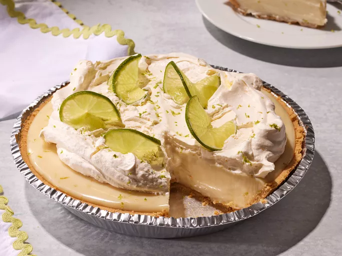

Key Lime Pie

This key lime pie recipe is made with condensed milk and sour cream. Fabulously easy and a summertime favorite! If you have time, a homemade graham cracker crust is better. Garnish with whipped cream and thin slices of lime if you like.
Ingredients
- 3 cups sweetened condensed milk
- 3/4 cup key lime juice
- 1/2 cup sour cream
- 1 tablespoon grated lime zest
- 1 (9 inch) prepared graham cracker crust
Steps
- Gather all ingredients and preheat the oven to 350 degrees F (175 degrees C).
- Combine condensed milk, key lime juice, sour cream, and lime zest in a bowl; mix well. Pour into graham cracker crust; place pie on a baking sheet.
- Bake in the preheated oven for 5 to 8 minutes, until tiny pinhole bubbles burst on the surface of the pie. The filling will be wobbly but not browned.
- Cover tightly and chill in the refrigerator for 1 hour.
- Transfer pie to a wire rack to cool, then thoroughly chill pie in the refrigerator before serving, about 1 hour. Garnish with lime slices and whipped cream, if desired.
- Enjoy!
Recipe List